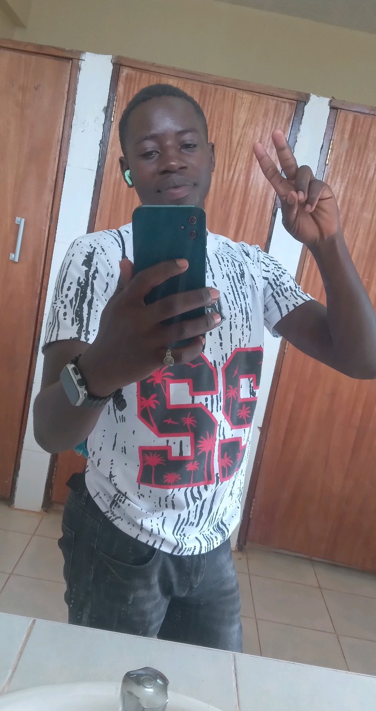

A tiger is born of a tiger. Dr. Lavingston, the son of Peterlis Odhiambo, carries the legacy of the Kotewas name with unmatched pride. He walks with a focused gaze, speaks with clarity, and acts with intention. Everything he does reflects the core values of his father: never beg, never fear, never follow — only lead.
At school, in business, and in leadership, Dr. Lavingston shows wisdom beyond his age. He stands firm, commands attention, and earns trust. People know — when he speaks, it's with purpose. He is respected not just as a son, but as a man in his own right.
Like his father, he doesn't chase fame. Fame follows him. He builds, protects, inspires. This is a man who represents the rising generation of lions in Kotewas.
